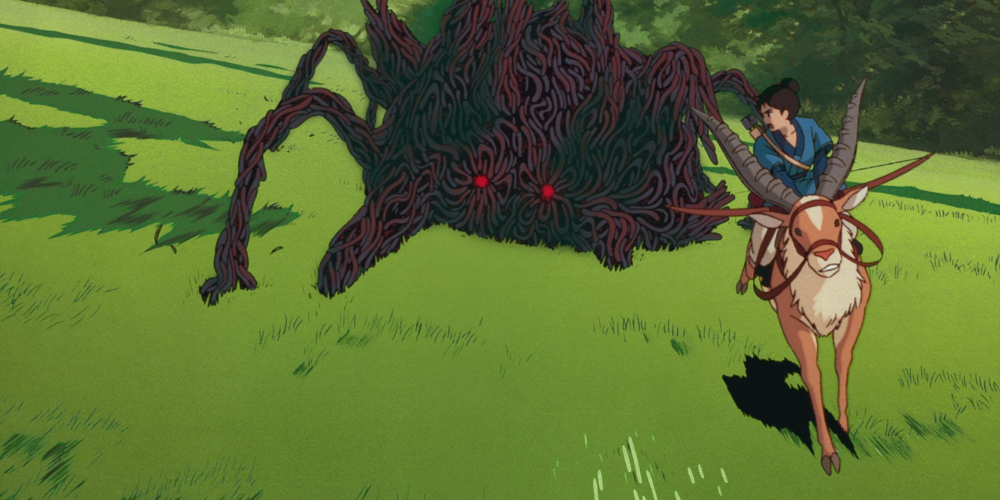
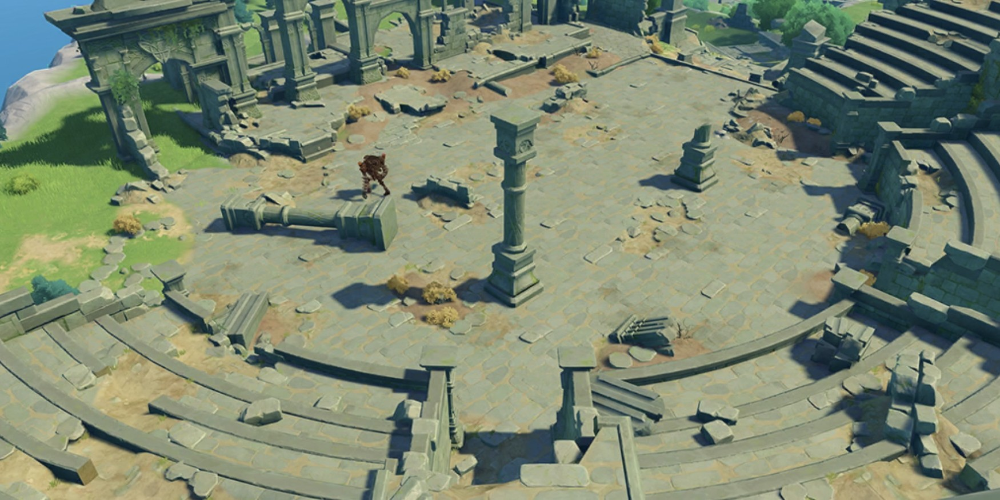
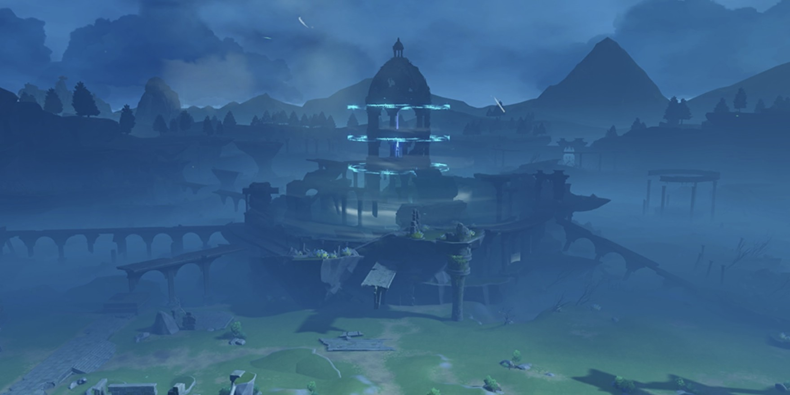
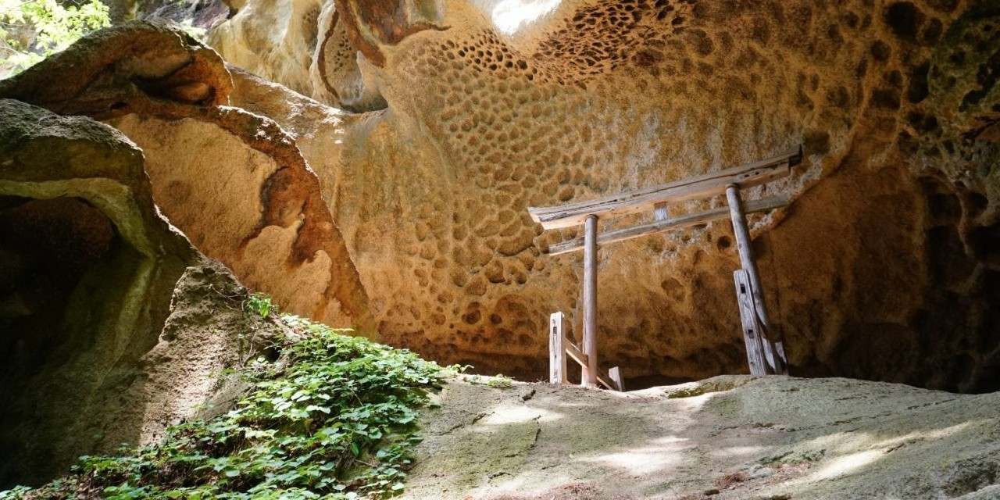

クトゥルーの呼び声
権利表示
本ページは、「株式会社アークライト」及び「株式会社KADOKAWA」が権利を有する『クトゥルフ神話TRPG』シリーズの二次創作物です。
Call of Cthulhu is copyright ©1981, 2015, 2019 by Chaosium Inc. ;all rights reserved. Arranged by Arclight Inc.
Call of Cthulhu is a registered trademark of Chaosium Inc.
PUBLISHED BY KADOKAWA CORPORATION 「クトゥルフ神話TRPG」「新クトゥルフ神話TRPG」
新しい要素
目次
本ページを読む上での注意
本文中以下の記号を用いています。
技能関連 →〈 〉
計算式 →［ ］
呪文関連 →《 》
魔道書、書籍タイトル →『 』
ゲーム用語、項目名など → “ ”
ゲーム・システム
イントロダクション
レギュレーション
AT（ANOTHER）
IN（INSANE）
《アザトースの呪詛》の習得
不死／不壊の要素
HD（HARD）
〈刻印〉の習得
キーパーレスのプレイ
神格の《招来》の呪文の習得
能力値が22ポイント以上
戦闘技能が100％以上
特徴の数が3つ以上
非人間のキャラクター
“人種の表”の使用
EZ（EASY）
探索者について
人種の表
| デミ・ヒューマン | STR | CON | SIZ | INT | POW | DEX | APP |
|---|
| 森人、エルフ | 3D6 | 3D6 | 2D6＋6 | 2D6＋6 | 2D6＋6 | 3D6 | 1D6＋12 |
| 矮人、ドワーフ | 6D6 | 4D6 | 1D6＋6 | 2D6＋6 | 3D6 | 3D6 | 3D6 |
| 獣人、ビースト | 4D6 | 2D6＋6 | 4D6 | 3D6 | 2D6＋6 | 2D6＋6 | 3D6 |
| 機人、エクスマキナ | 3D6＋3 | 3D6＋3 | 3D6＋6 | 3D6＋3 | 3D6 | 2D6＋6 | 1D6＋12 |
| 鬼人、オーガ | 3D6×2 | 2D6＋6 | 2D6＋6 | 2D6＋6 | 2D6＋6 | 3D6 | 2D6＋6 |
| 竜人、ドラゴニュート | 6D6 | 2D6＋6 | 2D6＋6 | 2D6＋6 | 2D6＋6 | 2D6＋6 | 2D6＋6 |
| 巨人、ギガント | 6D6 | 3D6 | 6D6 | 3D6 | 3D6 | 1D6 | 3D6 |
| 賢人、ホムンクルス | 3D6 | 3D6 | 2D6＋6 | 3D6＋6 | 3D6＋6 | 3D6 | 2D6＋6 |
| 剛人、ゴリラ | 4D6＋12 | 3D6 | 2D6＋12 | 1D6 | 3D6 | 3D6 | 3D6 |
職業のサンプル
鍛冶師
職業技能ポイント：［EDU×10＋STR×10］
職業技能：〈化学〉、〈機械修理〉、〈芸術〉（武器）、〈製作〉（武器）、〈考古学〉、〈地質学〉、〈歴史〉＋個人的な関心の技能2つ
特記：装備を製作できる。探索者が鍛冶師になるためには探索者の強大な筋力（少なくともSTR15）が必要である。
士官候補生
職業技能ポイント：［EDU×10＋STR×10］または［EDU×10＋DEX×10］
職業技能：〈応急手当〉、〈機械修理〉、〈重機械操作〉、任意の近接戦技能、任意の火器技能、任意の知識技能
＋次の技能から２つ選択：〈回避〉、〈隠れる〉、〈サバイバル〉（任意）、〈忍び歩き〉、〈水泳〉、〈操縦〉（任意）、〈電気修理〉、〈登攀〉、〈ナビゲート〉、〈パラシュート〉、〈砲〉、〈ほかの言語〉
特記：STR＋1またはCON＋1。
司書
職業技能ポイント：［EDU×20］
職業技能：〈聞き耳〉、〈図書館〉、〈ナビゲート〉、〈ほかの言語〉、〈母国語〉、〈目星〉＋個人的な関心の技能2つ
特記：EDU＋3。ただし探索者の年齢の下限は変化しない。呪文の研究期間は半減し、知識は永久的に保持される。
呪術師
職業技能ポイント：［EDU×10＋POW×10］
職業技能：〈隠す〉または〈隠れる〉、〈聞き耳〉、〈忍び歩き〉、＃〈呪力操作〉、〈追跡〉、〈図書館〉、〈歴史〉、＃〈反転術式〉または任意の近接戦技能
特記：STR＋1D3またはDEX＋1D3。また“術式技能”に配分できる技能ポイントとして［POW×10］ポイントを得られる。
賊
職業技能ポイント：［EDU×10＋DEX×10］
職業技能：〈隠す〉、〈隠れる〉、〈忍び歩き〉、〈変装〉＋任意の賊っぽい技能4つ
特記：賊の探索者は習得している任意の賊っぽい技能に応じたボーナスを得る。
道化師
職業技能ポイント：［EDU×10＋INT×10］または［EDU×10＋DEX×10］
職業技能：〈言いくるめ〉または〈信用〉、〈隠す〉または〈隠れる〉、〈仕込み杖〉、〈心理学〉、〈変装〉
＋次の技能から３つ選択：〈鍵開け〉、〈聞き耳〉、〈忍び歩き〉、〈追跡〉、〈ナイフ〉または〈拳銃〉
特記：DEX＋1またはAPP＋1。
ヒーロー
職業技能ポイント：［EDU×10＋DEX×10］または［EDU×10＋APP×10］
職業技能：〈応急手当〉、〈回避〉、〈聞き耳〉、〈芸術〉（任意）、〈変装〉、〈ほかの言語〉
＋次の技能から２つ選択：〈跳躍〉、〈運転〉（任意）、〈マーシャルアーツ〉、任意の近接戦技能、任意の火器技能
特記：ヒーローは守るものが多いんだよ。
魔術師
職業技能ポイント：［EDU×10＋POW×10］
職業技能：〈回避〉、〈図書館〉、〈ほかの言語〉、〈母国語〉、〈目星〉＋個人的な関心の技能3つ
特記：1D3種類の呪文を習得できる。探索者が魔術師になるためには探索者の強大な意志（少なくともPOW15）が必要である。
煉成師
職業技能ポイント：［EDU×20］または［EDU×10＋INT×10］
職業技能：〈化学〉、〈心理学〉、〈電子工学〉、〈薬学〉
＋次の技能から４つ選択：〈医学〉、〈回避〉、〈隠す〉、〈コンピューター〉、〈電気修理〉、〈図書館〉、〈物理学〉、〈ほかの言語〉
特記：探索者が煉成師になるためには探索者の強大な知性（少なくともINT15）が必要である。
多様な働き方
転職
すでに職業を選んだ探索者に転職をさせたいというのならば、この選択ルールを使うこと。探索者は転職先の職業に属する技能4つのポイントが、基本成功率を25％上回っていなければならない。そしたら、4つの技能から1つを選んでロールする。ロールに成功したならば、探索者はその職業に転職できる。ただしキーパーから許可された場合を除き、転職後の“職業技能”に配分する技能ポイントは固定（転職前のポイント）とする。ロールに失敗したならば、探索者は職業を失い無職になる。
副業
すでに職業を選んだ探索者に副業をさせたいというのならば、この選択ルールを使うこと。探索者は副業にしたい職業に属する技能4つのポイントが、基本成功率を25％上回っていなければならない。そしたら、4つの技能から1つを選んでロールする。ロールに成功したならば、探索者はその職業を副業にできる。ただしキーパーから許可された場合を除き、副業は1人の探索者に1つまでとする。また探索者は副業の“職業技能”に配分できる技能ポイントとして［INT×5］ポイントを得られる。
奇妙な探索者たち
ソウルウイルス感染者の探索者
感染度の決定
ソウルウイルス感染者の探索者は、このウイルスの侵蝕の度合いを表す「感染度」によって、能力値や技能が決定される。〈ソウル〉をロールしたとき、決定的成功が出た場合は〈ソウル〉に1D10を加算し、致命的失敗が出た場合は感染度を1進める。感染度が進んだときは、次の感染度に記された修正を、現在の能力値や技能に反映させる。なお、感染度の修正は累積する。
感染度１
感染していることを除けば普通の人間と変わりない。
感染度２
能力値：POW－1、CON－1。
技能：〈ソウル〉＋10％。
感染度３
能力値：APP－1、POW－1、CON－1D3。
技能：〈ソウル〉＋20％。
感染度４
能力値：APP－1D3、POW－1D3、CON－1D4。
技能：〈ソウル〉＋30％。
感染度５
完全にウイルスに呑み込まれる。こうなってしまった探索者はロストしたものとして扱われる。
ルールと技能
武器の表
| 近接戦武器 | 命中率 | ダメージ | 基本射程 | 攻撃回数 | 装弾数 | 耐久力 |
|---|
| クナイ | 25 | 1D6＋db | タッチ | 1 | － | 9 |
| 丸太 | 5 | 2D8＋db | タッチ | 1 | － | 30 |
| 釣り竿 | 5 | 〈組みつき〉 | 3m | 1 | － | 12 |
| おにぎり | 〈投擲〉 | 1／2db | 〈投擲〉 | 1 | － | 1 |
| 手裏剣 | 25 | 1D4＋1／2db | 〈投擲〉 | 2 | － | 2 |
| 火器 | 命中率 | ダメージ | 基本射程 | 攻撃回数 | 装弾数 | 耐久力 |
|---|
| モーゼル・ミリタリー | 10 | 1D10 | 20m | 2または連射 | 10/20 | 10 |
| モスバーグM500 | 30 | 4D6/2D6/1D6 | 10/20/50m | 1 | 5 | 12 |
| 爆発物、重火器、その他 | 命中率 | ダメージ | 基本射程 | 攻撃回数 | 装弾数 | 耐久力 |
|---|
魔法の表
| 妖精魔法Ⅰ | コスト | 基本射程 | 効果時間 | 魔法属性 | ダメージ |
|---|
| ティンダー | 2MP | タッチ | 瞬間 | 火 | 可燃物を発火させる |
| ファイアボルト | 3MP | 10m | 瞬間 | 火 | 魔術的な1D6＋3lv |
| フレア | 4MP | その場所 | 瞬間 | 火 | 3m以内に閃光によるスタン |
| ウィンドボイス | 2MP | 100m | 3分間 | 風 | 5m以内の音を聞き、声を届ける |
| ウィンドガード | 3MP | 30m | 3分間 | 風 | 風属性の被ダメージ－3 |
| ウィンドカッター | 4MP | 30m | 瞬間 | 風 | 魔術的な1D6＋3lv |
| ピュリフィケーション | 2MP | タッチ | 瞬間 | 水 | 不純物の混じった水を真水にする |
| ウォータースクリーン | 3MP | 10m | 3分間 | 水 | 火属性の被ダメージ－3 |
| アイスボルト | 4MP | 10m | 瞬間 | 水 | 魔術的な1D6＋3lv |
| スネア | 3MP | 30m | 瞬間 | 地 | 二足歩行である場合には転倒 |
| ストーンガード | 4MP | 30m | 3分間 | 地 | 次回物理的な被ダメージ－5 |
| アースハンマー | 3MP | 10m | 瞬間 | 地 | 必中の物理的な1D6＋3lv |
| ヒールウォーター | 3MP | タッチ | 3分間 | 光 | 5の回復をさせる水を作製する |
| ウィスパーヒール | 4MP | 30m | 瞬間 | 光 | 3lvの回復 |
| プライマリィヒール | 5MP | 10m | 瞬間 | 光 | 4＋3lvの回復 |
| カーム | 2MP | 10m | 瞬間 | 闇 | |
| ディストラクション | 3MP | 10m | 12秒間 | 闇 | |
| デイズ | 4MP | 30m | 12秒間 | 闇 | |
| 妖精魔法Ⅱ | コスト | 基本射程 | 効果時間 | 魔法属性 | ダメージ |
|---|
| ヒートメタル | 5MP | タッチ | 瞬間 | 火 | 装備に魔術的な2D6＋3lv |
| フレイムアロー | 6MP | 30m | 瞬間 | 火 | 魔術的な1D10＋3lv |
| ファイアブラスト | 6MP | 10m | 瞬間 | 火 | 3m以内に魔術的な1D6＋3lv |
| ホバリング | 5MP | その場所 | 3分間 | 風 | 10cmほど浮き上がる、DEX／2 |
| サイレントムーブ | 6MP | タッチ | 1時間 | 風 | 物音を立てずに移動、行動できる |
| シークレットボイス | 2MP | 100m | 3分間 | 風 | 対象と秘密の会話を行える |
| ボトムウォーキング | 4MP | 30m | 1時間 | 水 | 水底での活動が可能になる |
| ハードウォーター | 5MP | 30m | 1時間 | 水 | 水上歩行が可能になる |
| ミストハイド | 4MP | 10m | 12秒間 | 水 | 霧に紛れさせ〈回避〉に＋10％ |
| ペブルショット | 4MP | 10m | 瞬間 | 地 | 魔術的な1D6＋3lv |
| エントラップ | 5MP | 10m | 3分間 | 地 | 土の腕で捕まえて〈回避〉に－10％ |
| ストーンブラスト | 6MP | 30m | 瞬間 | 地 | 魔術的な1D10＋3lv |
| バーチャルタフネスⅠ | 4MP | 10m | 3分間 | 光 | 耐久力の最大値＋3lv |
| ナーシング | 6MP | タッチ | 1日間 | 光 | 毒や病気の進行を抑制する |
| アドバンストヒーリング | 7MP | 10m | 瞬間 | 光 | 8＋3lvの回復 |
| パニックラン | 4MP | 10m | 12秒間 | 闇 | |
| マインドブランク | 6MP | 30m | 3分間 | 闇 | |
| ブレイブハート | 5MP | 10m | 36秒間 | 闇 | 精神的効果から守る |
| 妖精魔法Ⅲ | コスト | 基本射程 | 効果時間 | 魔法属性 | ダメージ |
|---|
| インシネレイション | 8MP | 10m | 瞬間 | 火 | 2m以内の可燃物を燃やし尽くす |
| フレイムコート | 7MP | 30m | 3分間 | 火 | 水属性の被ダメージ－5 |
| ファイアウォール | 10MP | 30m | 3分間 | 火 | 3lvポイントの炎の壁を立てる |
| シュートアロー | 6MP、矢 | 30m | 瞬間 | 風 | 必中の物理的な1D10＋3lv |
| ミサイルプロテクション | 5MP | 10m | 3分間 | 風 | 飛び道具に対する〈回避〉に＋25％ |
| サウンドポケット | 6MP | 30m | 36秒間 | 風 | 音と声を隔絶させる |
| チルレイン | 8MP | 30m | 瞬間 | 水 | 4m以内に魔術的な1D6＋3lv |
| シンク | 6MP | 10m | 3分間 | 水 | 水中や水上での浮力を失わせる |
| アイスウォール | 9MP | 30m | 3分間 | 水 | 3lvポイントの氷の壁を立てる |
| グレートスネア | 7MP | 30m | 瞬間 | 地 | 対象を転倒させる |
| ストーンウォール | 6MP | 30m | 3分間 | 地 | 3lvポイントの石の壁を立てる |
| ゴールドブリッジ | 4MP | 30m | 3分間 | 地 | 石の橋や階段を作る |
| ライフサポート | 6MP | 10m | 3分間 | 光 | 瀕死である場合には被ダメージ／2 |
| エクステンドヒーリング | 9MP | 10m | 瞬間 | 光 | 12＋3lvの回復 |
| バイタルフォース | 4MP | 10m | 瞬間 | 光 | 耐久力をマイナスからゼロにする |
| マインドリンク | 9MP | タッチ | 1時間 | 闇 | 感覚、意識を共有する |
| ショッキングウェイブ | 22MP | その場所 | 24秒間 | 闇 | |
| インサニティ | 9MP | 30m | 36秒間 | 闇 | |
| 妖精魔法Ⅳ | コスト | 基本射程 | 効果時間 | 魔法属性 | ダメージ |
|---|
| ファイルストーム | 13MP | 30m | 瞬間 | 火 | 5m以内に魔術的な2D10＋3lv |
| ファイルジャベリン | 9MP | 30m | 瞬間 | 火 | 魔術的な3D6＋3lv |
| ファイルブレイク | 19MP | タッチ | 1日間 | 火 | 5m以内に防火帯を発生させる |
| エアウォーク | 10MP | 10m | 3分間 | 風 | 空中に足場があるように動ける |
| ダウンバースト | 14MP | 30m | 3分間 | 風 | 6m以内を吹き下ろす風で押しつける |
| ウィンドストーム | 9MP | 30m | 瞬間 | 風 | 6m以内に魔術的な1D10＋3lv、転倒 |
| アイスコフィン | 8MP | タッチ | 永久 | 水 | 100ポイントの氷の棺に閉じ込める |
| ウォーターエッジ | 8MP | 30m | 瞬間 | 水 | 魔術的な2D10＋3lv |
| カレント | 24MP | 30m | 1日間 | 水 | 時速50kmまでの速度で水流を操る |
| トンネル | 8MP | タッチ | 3分間 | 地 | |
| リングプロテクション | 12MP | 30m | 3分間 | 地 | 12秒に1回物理的な被ダメージ－5 |
| クラック | 9MP | 10m | 瞬間 | 地 | 6m以内に魔術的な2D10＋3lv、転倒 |
| リッチヒール | 8MP | 30m | 瞬間 | 光 | 3m以内に6＋3lvの回復 |
| レストアヘルス | 6MP | 10m | 瞬間 | 光 | 毒と病気を癒やす |
| インビジビリティ | 16MP | その場所 | 12秒間 | 光 | 透明になる |
| マスキング | 12MP | タッチ | 1時間 | 闇 | |
| イビルドリーム | 15MP | ∞ | 永久 | 闇 | |
| トータルサニティ | 8MP | 10m | 瞬間 | 闇 | 精神状態を平常に戻す |
| 妖精魔法Ⅴ | コスト | 基本射程 | 効果時間 | 魔法属性 | ダメージ |
|---|
| フレイムガイザー | 23MP | 30m | 3分間 | 火 | 6m以内に2D6＋3lvの炎が噴き上がる |
| ファイアモーラー | 16MP | 50m | 瞬間 | 火 | 魔術的な3D10＋3lv |
| ファイアポート | 12MP | 10m | 瞬間 | 火 | 1km以内へ炎に包み瞬間移動させる |
| ワールウィンド | 8MP | 30m | 1時間 | 風 | 指定した位置まで風で運ぶ |
| ツイスター | 12MP | 30m | 瞬間 | 風 | 30m以内に放り出され、物理的な30 |
| トルネード | 13MP | 50m | 瞬間 | 風 | 2D10＋3lvの竜巻が駆け抜ける |
| アイスストーム | 12MP | 30m | 瞬間 | 水 | 6m以内に魔術的な2D6＋3lv |
| フリーズ | 12MP | 10m | 12秒間 | 水 | 魔術的な2D10＋3lv、D100に－10％ |
| メイルシュトローム | 15MP | 30m | 瞬間 | 水 | 6m以内に魔術的な2D10＋3lv |
| ジャイアントキック | 30MP | 30m | 瞬間 | 地 | 必中の物理的な3D6＋3lv、転倒 |
| グレートキャプチャー | 9MP | 10m | 3分間 | 地 | 土の腕で繋ぎ止めて動けなくする |
| アースクェイク | 28MP | その場所 | 瞬間 | 地 | 6m以内に魔術的な50、転倒 |
| バーチャルタフネスⅡ | 9MP | 10m | 3分間 | 光 | 耐久力の最大値＋6＋3lv |
| リジェネレイション | 21MP | タッチ | 瞬間 | 光 | 欠損した身体部位を再生する |
| アルティメットヒーリング | 15MP | 10m | 瞬間 | 光 | 100の回復 |
| フォーゲット | 16MP | 10m | 7日間 | 闇 | |
| マインドリード | 14MP | タッチ | 特殊 | 闇 | |
| マインドクラッシュ | 13MP | 10m | 3分間 | 闇 | |
各魔法には「レベル」が定められている。使用できる魔法のレベル上限は、INTとPOWを合計して、それを12で割った値である。端数がある場合は切り上げる。対応する魔法系技能を持っていると、使用できる魔法を自動的に習得する。例えば、＃〈妖精魔法〉を持つ魔法レベルⅢのキャラクターは、Ⅰ～Ⅲレベルの妖精魔法を行使できる。
技能の定義
遺跡（0％）
遺跡の調査に必要な、さまざまな変わった技能／呪文を追加する樹形図のような技能である。この技能によって追加される技能の基本成功率はすべて0％であり、ポイントは技能ポイントで得られず、＃〈遺跡〉の1ポイントを支払うことによってのみ＋1％ずつポイントを得られる。技能によっては、習得の条件として「必要な技能」というものがあるが、そうした技能のポイントは、必要な技能のポイントを上回ることができない。追加される技能には＃〈魂装／霊装／焔牙〉＃〈衝撃〉＃〈魔力〉、呪文には＃《斬鉄》などがある。＃〈遺跡〉のポイントは技能ポイントで得られず、遺跡を調査することによってのみ得られる。
〈魂装／霊装／焔牙〉
自らの霊核との対話によって（魂装）、あるいは精神的エネルギーによって（霊装）、あるいは超化された精神力によって（焔牙）、魂を具現化し魔術的な武器として創り出す技能である。この武器は探索者の魂でできているため、壊された場合は意識不明に陥ってしまう。この技能によって創り出される武器のデータは、キーパーが戸惑わないよう事前に提案しておくことをおすすめする。
〈衝撃〉
習得の条件として＃〈魔力〉が必要である。近接戦技能と組み合わせて使うことができ、近接戦技能ロールが探索者の＃〈衝撃〉の値以下だった場合には、1マジック・ポイントのコストを支払うことで、探索者の6POWあるいはその端数につき、攻撃は3mの射程を得る。
〈魔力〉
魔力的感覚を強化する技能である。近接戦技能と組み合わせて使うことができ、近接戦技能ロールが探索者の＃〈魔力〉の値以下だった場合には、1マジック・ポイントのコストを支払うことで、探索者の6POWあるいはその端数につき、ダメージに1D3ポイントを加算できる。また〈目星〉とも組み合わせて使うことができ、〈目星〉ロールが探索者の＃〈魔力〉の値以下だった場合には、視界の範囲内にある魔力を「視る」ことができる。
《斬鉄》
刻印（呪文を選ぶ）（0％）
胎内での肉体形成の時点で、対応する魔術の印などが体内や体表に構築されたときに獲得する、生来の魔術とそれを扱う技能である。魔術社会においては才能として例えられることもある。基本的に体の一部として扱えるため、構築の完成度に応じた威力や成功率で呪文を使える。そのほとんどが基本的なコストとなるマジック・ポイントや詠唱を必要とせず、まさに魔術に愛されていると言える。ただし、これらの刻印を持つ人間はたいていの場合、赤子の頃から強い知能を持っていたり、魔術を難なく行使できるため、異端者や忌み子として扱われ、十分な教養を受けることができないことが多い。＃〈刻印〉のポイントは技能ポイントで得られず、1EDUまたは1INTを支払うことによってのみ＋10％ずつポイントを得られる。能力値の増減により能力値ロールや技能ポイントは変化するが、探索者の年齢の下限などは変化しない。キーパーやほかのプレイヤーの同意を得られれば、探索者のバックグラウンドに応じて、ほかの能力値で代用してもよい。
魂解（系統を選ぶ）（［POW］％）
魂に宿る生命エネルギーを具現化させる特殊な能力である。修練の先にたどり着く己が魂の開放。＃〈魂解〉のポイントは技能ポイントで得られない。
強化系魂
主に自身の肉体を飛躍的に向上させる能力。全ての系統の中で最もシンプルだが、使い勝手が良く破壊力は抜群。この系統の魂解の型には、一撃必殺、身体強化、能力強化、媒体強化、知能強化、常時開放などがある。
放出系魂
自身の魂から生成されたエネルギーを外界に放つ能力。通常の魂解は肉体と切り離すとその力は消失してしまうが放出系魂は肉体から離れても力を維持できる。その範囲は使用者によって異なるが、中距離や遠距離戦においてはこの能力は非常に役立つ。この系統の魂解の型には、媒介放出、人形放出、空間放出、範囲放出、吸収、常時開放などがある。
操作系魂
他者や物質を強制的に操作する能力。他者の肉体や思考、能力だけでなく外界の事象すら操ることができる。また、操った力をさらに別の他者に付与する能力がある。この系統の魂解の型には、肉体操作、魂操作、精神操作、事象操作、物質操作、常時開放などがある。
具現化系魂
己の魂の形を外界に発現させる能力。人型や獣型、空間ごと具現化させることも可能。己の魂と相互作用している為、魂の力が弱まると具現化できないのも特徴である。この系統の魂解の型には、空間具現化、人型具現化、獣型具現化、無機物具現化、遠距離具現化、常時開放などがある。
変化系魂
肉体や物質を別の性質に変化させる能力。変化させる物は多岐に渡り、変化させる対象は自身だけでなく相手に使用できる場合もある。この系統の魂解の型には、形態変化、性質変化、生命変化、身体変化、事象変化、常時開放などがある。
特質系魂
特定の条件でその能力が発現する特殊な能力。バフやデバフを掛けたり、概念に干渉したり、時空を超えた驚異的な力を有する。難解且つやりたい放題な能力である。この系統の魂解の型には、“視る”、“干渉する”、“受ける”、“放つ”、“変わる”、常時開放などがある。
魂解は戦いを通して成長する。魂解を使用した戦いにおいて勝利した場合、1ソウルポイントを獲得する。また、双方が魂解を使用した戦闘においては2ソウルポイントを獲得する。ソウルポイントの割り振りは以下の通りである。また、探索者は初期作成において5ソウルポイントを持つ。ただし、魂解は模擬戦やそれに似た形態を持つ戦闘においては成長しない（ソウルポイントを得れない）。全てを埋めた際、魂解は進化し、極限系魂へと至る。
0/6 魂解による物理ダメージに＋1
0/6 魂解による精神ダメージに＋1
0/6 魂解を発動した際に特定の能力値に＋1（事前に指定する、指定した場合変えることは出来ない）
0/10 魂解の技能値＋5％
0/4 魂解による物理、精神ダメージを－1する。
呪力操作（0％）
呪術師にとって必須の技能である。近接戦技能と組み合わせて使うことができ、近接戦技能ロールが探索者の＃〈呪力操作〉の値以下だった場合には、探索者の6POWあるいはその端数につき、ダメージに1D3ポイントを加算できる。
反転術式（0％）
呪力から正のエネルギーを生み出すための技能である。＃〈呪力操作〉と組み合わせて使うことができ、＃〈呪力操作〉ロールが探索者の＃〈反転術式〉の値以下だった場合には、探索者の6POWあるいはその端数につき、耐久力を1D3ポイント回復できる。ただし自分以外の人間を対象にする場合には、対象が回復する耐久力は半分の値となり、呪霊を対象にする場合には、回復はせず同じ値だけ耐久力を失わせる。また術式技能とも組み合わせて使うことができ、術式技能ロールが探索者の＃〈呪力操作〉の値以下だった場合には、術式の効果を術式の効果を反転させる。
妖精魔法（属性を選ぶ）（0％）
妖精魔法を使うための技能である。自身の魔力を代償として、妖精の力を借りることができる。妖精魔法の行使には、妖精に呼びかけるための発声が必要であるため、声が出せない状態では、魔法は行使できない。エクスマキナの探索者は＃〈妖精魔法〉のポイントを得られない。
実績の定義
一本釣り
達成の条件として〈釣り竿〉の結果で「01」を出したことがなければならない。〈釣り竿〉の技能に成功した場合、対象とした普通の武器からはダメージを受けないような生き物にも釣り針を刺すことができるようになる。
強運
達成の条件として1つの戦闘での技能のロールが3回以上「決定的成功」だったことがなければならない。POW＋1。
凶運
達成の条件として1つの戦闘での技能のロールが3回以上「致命的失敗」だったことがなければならない。すべての決定的成功および致命的失敗の確率に＋1％。
慈愛
達成の条件として〈医学〉あるいは〈応急手当〉を少なくとも80％持ち、この2つの技能のうちどちらかに20回以上成功したことがなければならない。〈医学〉あるいは〈応急手当〉の技能に成功した場合、手当を受けた探索者の回復ポイントは、さらに1D3ポイント加算される。
自己犠牲
達成の条件として少なくとも10回以上、仲間を庇ってダメージを受けたことがなければならない。仲間を庇ってダメージを受ける際、そのアクションは自動的に成功し、実際にロールで出したダメージの値から3を差し引く。
死に損ない
達成の条件として少なくとも3回以上、耐久力がゼロあるいはマイナスから1ポイント以上に回復したことがなければならない。意識がある状態で耐久力がゼロあるいはマイナスにまで低下した場合、1D3ポイントの耐久力をただちに回復させる。
生存本能
達成の条件として〈回避〉を少なくとも60％持ち、〈回避〉の技能に3回以上続けて成功したことがなければならない。DEX＋1。ただしSIZが9以下の場合、DEX＋2。
優等生
達成の条件として不利な特徴を持たない学生の探索者であり、少なくとも4つの能力値ポイントが平均値超過でなければならない。有利な特徴を1つ選ぶ。
劣等生
達成の条件として不利な特徴を持つ学生の探索者であり、少なくとも4つの能力値ポイントが平均値未満でなければならない。有利な特徴と不利な特徴を1つずつ選ぶ。
参考セクション
クリーチャー
独立種族
奉仕種族
渇きたるもの
STR 3D6＋3 CON 3D6＋3
SIZ 2D6＋9 INT なし
POW 6D6 DEX 3D6＋3
移動 10 耐久力 15
平均ダメージ・ボーナス：＋1D4
武器：はぎとりの注視 MP対MP、ダメージ 1D6および皮膚の損失
装甲：なし。渇きたるものに射撃したり、打撃を与えたりすると、武器を持つ手に耐え難いかゆみが発生し、意に反して命中しない。この効果から逃れるためには、D100をロールして［POW×5］以下を出さなければならない。
正気度喪失：渇きたるものを見て失う正気度ポイントは1D4／1D10
異界のテクノロジー
神格と分類
旧き神
タタリ神、堕ちた猪の神
STR 110 CON 130 SIZ 110 INT 0 POW 70
DEX 7 移動 10 耐久力 120
ダメージ・ボーナス：＋13D6
武器：突進 60％、ダメージ 1D8＋db＋毒*
* POT（効力）はそのタタリのCONと同じ値である。
装甲：30ポイントの毛、皮膚、筋肉、それに加えて武器にダメージを与える腐食性の粘液
呪文：なし
正気度喪失：タタリ神を見て失う正気度ポイントは1D10／1D100
トワリン、空を裂く魔龍
STR 100 CON 90 SIZ 75 INT 15 POW 30
DEX 25 移動 10／飛行 50 耐久力 83
ダメージ・ボーナス：＋10D6
武器：かぎ爪 80％、ダメージ db（2回攻撃）
噛みつき 60％、ダメージ db×2
波動弾 40％、ダメージ 1／2db（2回攻撃）
装甲：15ポイントの毛、皮膚、筋肉
呪文：《終天のフィナーレ》
正気度喪失：トワリンを見て失う正気度ポイントは1／1D10
外なる神
グレート・オールド・ワン
パスター、空飛ぶスパゲッティ・モンスター
STR 120 CON 200 SIZ 100 INT 5 POW 100
DEX 30 移動 20／飛行 50 耐久力 150
ダメージ・ボーナス：＋13D6
武器：触肢 100％、ダメージ 自動的なパスタ
装甲：30ポイントの皮膚
呪文：キーパーが適切と思うすべての呪文を知っている。
正気度喪失：パスターを見て失う正気度ポイントは1D10／1D100
特徴：ハスターと同等、あるいはハスターから生まれたと考えられる神格。
モンスターと動物
超自然の存在
オーク
STR 2D6＋8 CON 3D6
SIZ 2D6＋8 INT 3D6
POW 3D6 DEX 3D6
移動 8 耐久力 12～13
平均ダメージ・ボーナス：＋1D4
武器：かぎ爪 30％、ダメージ 1D6＋db
噛みつき 25％、ダメージ 1D4
牙で突く 20％、ダメージ 1D8＋db
技能：登攀 80％、聞き耳 60％、追跡 65％
正気度喪失：オークを見て失う正気度ポイントは0／1D6
オオリガメ
STR 4D6＋6 CON 4D6＋6
SIZ 3D6＋6 INT 1D6
POW 3D6＋6 DEX 1D6
移動 8 耐久力 18～19
平均ダメージ・ボーナス：＋1D6
武器：ぶつかる 40％、ダメージ 2D6＋db
装甲：石による9ポイント。そのほかの材料で組み立てられたオオリガメは、材料によってさまざまな強さの装甲を持つ。
正気度喪失：オオリガメを見て失う正気度ポイントは0／1D6
キョンシー
STR 2D6＋6 CON 6D6
SIZ 2D6＋6 INT 1D6
POW 1 DEX 3D6
移動 8 耐久力 17
平均ダメージ・ボーナス：＋1D4
武器：跳び蹴り 40％、ダメージ 1D8＋db
装甲：なし。ただし通常の攻撃はダメージを与えない。貫通によって四肢のどれかを失う。
正気度喪失：キョンシーを見て失う正気度ポイントは0／1D4
グール
STR 3D6＋6 CON 2D6＋6
SIZ 2D6＋6 INT 2D6＋6
POW 2D6＋6 DEX 2D6＋6
移動 9 耐久力 13
平均ダメージ・ボーナス：＋1D4
武器：かぎ爪 30％、ダメージ 1D6＋db
噛みつき 30％、ダメージ 1D6＋牙でいたぶる（1D4）
装甲：火器と飛び道具はロールで出た値の半分のダメージを与える（端数切り上げ）。
技能：登攀 85％、隠れる 60％、跳躍 75％、聞き耳 70％、忍び歩き 80％、目星 50％
正気度喪失：グールを見て失う正気度ポイントは0／1D6
クラーケン
STR 10D6 CON 2D6＋6
SIZ 10D6 INT なし
POW 3D6 DEX 2D6＋12
移動 4／泳ぐ 10 耐久力 23
平均ダメージ・ボーナス：＋3D6
武器：くちばし 45％、ダメージ 1D10＋毒*
触肢 45％、ダメージ 〈組みつき〉
* POT（効力）はそのクラーケンのCONと同じ値である。
装甲：2ポイントの皮
正気度喪失：クラーケンを見て失う正気度ポイントは0／1D8
ゴースト
INT 4D6＋2 POW 4D6
武器：環境を利用する ［POW×5］、ダメージ 1D3
ゴースト攻撃 POW対POW、ダメージ 吸収（1D3POW）
正気度喪失：ゴーストを見て失う正気度ポイントは1／1D8
ゴーレム
STR 5D6＋6 CON 3D6＋6
SIZ 3D6＋8 INT 1D6
POW 2D6＋5 DEX 1D6
移動 6 耐久力 17～18
平均ダメージ・ボーナス：＋2D6
武器：こぶし 45％、ダメージ 1D6＋1／2db
押しつぶし 35％、ダメージ 1D6＋db
装甲：粘土あるいは石による9ポイント。そのほかの材料で組み立てられたゴーレムは、材料によってさまざまな強さの装甲を持つ。ゴーレムの額に記された最初の2文字をかき消せば即座にこのモンスターは破壊される。
正気度喪失：ゴーレムを見て失う正気度ポイントは0／1D6
ゴブリン
STR 1D20 CON 1D20
SIZ 1D8 INT 4D6
POW 1D20 DEX 2D20
移動 8 耐久力 8
平均ダメージ・ボーナス：なし
武器：棍棒 25％、ダメージ 1D10＋db
技能：隠れる 90％、忍び歩き 70％
正気度喪失：ゴブリンを見て失う正気度ポイントは0／1D6
スケルトン
STR 3D6 CON なし
SIZ 2D6＋6 INT 3D6
POW 1 DEX 3D6
移動 7 耐久力 なし
平均ダメージ・ボーナス：なし
武器：どんな近接戦武器も命中率はDEX×3で、ダメージは通常のダメージ＋db
装甲：なし。ただし貫通や“決定的成功”などの結果は無視する。スケルトンに一撃を与えたときにスケルトンを破壊するチャンスは、［ダメージ×4］以下をD100ロールで出した場合である。
正気度喪失：スケルトンを見て失う正気度ポイントは0／1D6
スライム
STR 1D6 CON 1D6
SIZ 1D6 INT 1D6
POW 1D6 DEX 1D6
移動 6 耐久力 3～4
平均ダメージ・ボーナス：－1D6
武器：頭突き 30％、ダメージ 1D4＋db
装甲：そのスライムのSIZと同じ値
正気度喪失：スライムを見て失う正気度ポイントは0／1
ゾンビ
STR 3D6×1.5 CON 3D6×1.5
SIZ 2D6＋6 INT なし
POW 1 DEX 2D6
移動 6 耐久力 14～15
平均ダメージ・ボーナス：＋1D4
武器：噛みつき 30％、ダメージ 1D3
装甲：なし。ただし貫通する武器は1ポイントのダメージ、そのほかのすべての武器はロールで出たダメージの半分のダメージしか与えない。
正気度喪失：ゾンビを見て失う正気度ポイントは1／1D8
トリックフラワー
STR 2D6 CON 2D6
SIZ 2D4＋10 INT 1D6
POW 1D6＋6 DEX 4D6
移動 特殊 耐久力 11
平均ダメージ・ボーナス：なし
武器：回転攻撃 30％、ダメージ 1D6＋db＋熱*
追尾弾 100％、ダメージ 熱*
* POT（効力）はそのトリックフラワーのCONと同じ値である。
装甲：1ラウンドにつき1ポイントの再生
正気度喪失：トリックフラワーを見て失う正気度ポイントは0／1D4
トレント
STR 5D6＋18 CON 3D6＋12
SIZ 5D6＋20 INT 1D6
POW 3D6 DEX 4D6
移動 4 耐久力 30
平均ダメージ・ボーナス：＋4D6
武器：つる 50％、ダメージ 〈組みつき〉
装甲：6ポイントの樹皮。さらに1ラウンドにつき2ポイントの再生。
技能：隠れる 30％、忍び歩き 30％
正気度喪失：トレントを見て失う正気度ポイントは0／1D6
トロール
STR 4D6＋6 CON 4D6＋8
SIZ 2D6＋2 INT 1D6＋6
POW 3D6 DEX 2D6
移動 11 耐久力 15～16
平均ダメージ・ボーナス：＋1D4
武器：噛みつき 45％、ダメージ 1D6
かぎ爪 60％、ダメージ 1D8
棍棒 25％、ダメージ 1D10＋db
物を投げる 15％、ダメージ 1D8
装甲：3ポイントの厚い毛皮
技能：隠れる 80％、聞き耳 80％、忍び歩き 80％、追跡 75％
正気度喪失：トロールを見て失う正気度ポイントは0／1D4
バジリスク
STR 2D6＋12 CON 2D6＋6
SIZ 3D6 INT なし
POW 1D6＋12 DEX 3D6
移動 6 耐久力 12
平均ダメージ・ボーナス：＋1D4
武器：噛みつき 30％、ダメージ 2D4＋db＋毒*
にらみ POW対MP、ダメージ 毒*
* POT（効力）はそのバジリスクのCONと同じ値である。
装甲：4ポイントのウロコ、それに加えて武器にダメージを与える腐食性の血液
正気度喪失：バジリスクを見て失う正気度ポイントは0／1D8
ヒルチャール
STR 3D6＋3 CON 3D6＋3
SIZ 1D6＋6 INT 1D6＋6
POW 3D6 DEX 2D6＋6
移動 8 耐久力 11～12
平均ダメージ・ボーナス：なし
武器：かぎ爪 60％、ダメージ 1D4＋db
物を投げる 60％、ダメージ 1D4
棍棒 40％、ダメージ 1D10＋db
安っぽい弩 40％、ダメージ 1D6
装甲：なし。ただし盾を持つヒルチャールの戦士は、盾の材料によってさまざまな強さの装甲を持つ。
正気度喪失：ヒルチャールを見て失う正気度ポイントは0／1D4
マンティコア
STR 4D6＋12 CON 2D6＋6
SIZ 4D6＋12 INT 2D6
POW 3D6 DEX 2D6＋3
移動 11 耐久力 20
平均ダメージ・ボーナス：＋2D6
武器：噛みつき 30％、ダメージ 1D10＋db
かぎ爪 50％、ダメージ 1D6＋db
毒針 40％、ダメージ 3D3＋毒*
* POT（効力）はそのマンティコアのCONと同じ値である。
装甲：4ポイントの丈夫な皮
正気度喪失：マンティコアを見て失う正気度ポイントは0／1D6
自然界の生き物
オオカミ
STR 2D6＋6 CON 3D6
SIZ 2D6＋1 INT 1D4
POW 3D6 DEX 2D6＋6
移動 12 耐久力 9～10
平均ダメージ・ボーナス：なし
武器：噛みつき 30％、ダメージ 1D8
装甲：1ポイントの毛皮
技能：目星 60％、追跡 80％
現場猫
STR 2D6 CON 3D6
SIZ 1D4 INT なし
POW 2D6 DEX 2D6＋12
移動 12 耐久力 6～7
平均ダメージ・ボーナス：－1D6
装甲：なし。ただし現場の事故はダメージをまったく与えない。
技能：猫語 100％、それと連絡する能力。
生息地：現場猫は工事現場を安全たらしめる生き物であり、ありとあらゆる工事現場の近くに生息する。これは現場が生まれたときには既に棲みついており、よって現場は安全である。もし現場の安全に危機が訪れれば、ヘルメットを被った二足歩行の猫が顕現し、その場で「ヨシ！」といった言葉を発し始める。これらの現象は当事者にしか認識できない。ただし、何かしらの理由で大きな事故が起きる可能性があると、そこに居る者すべてが認識できるようになる。
ヤタガラス
STR 1D3 CON 2D4
SIZ 1D2 INT 2D6＋6
POW 3D6 DEX 3D6＋18
移動 8 耐久力 4
平均ダメージ・ボーナス：－1D6
武器：噛みつき 25％、ダメージ 1D4＋db
かぎ爪 40％、ダメージ 1D2＋db
技能：回避 80％、母国語 60％、目星 95％
魔術
アーティファクト
汎用機竜
ワイバーン
STR 30 DEX 15 移動 5／飛行 25 耐久力 50
マジック・ポイント：15ポイント
ダメージ・ボーナス：＋3D6
武器：機竜爪刃 〈操縦（機竜）〉、ダメージ 1D6＋db
装甲：5ポイントの鋼鉄板
特徴：飛翔型の汎用機竜。詠唱符は「――来たれ、力の象徴たる紋章の翼竜。我が剣に従い飛翔せよ、《ワイバーン》」。
ワイアーム
STR 50 DEX 5 移動 20 耐久力 75
マジック・ポイント：10ポイント
ダメージ・ボーナス：＋6D6
武器：機竜息砲 〈操縦（機竜）〉、ダメージ 6D6／1m
装甲：10ポイントの鋼鉄板
特徴：陸戦型の汎用機竜。詠唱符は「――来たれ、不死なる象徴の竜。連鎖する大地の牙と化せ、《ワイアーム》」。
ドレイク
STR 20 DEX 20 移動 10 耐久力 25
マジック・ポイント：20ポイント
ダメージ・ボーナス：＋1D6
武器：機竜爪刃 〈操縦（機竜）〉、ダメージ 1D6＋db
装甲：5ポイントの鋼鉄板。さらに1ラウンドにつき1ポイントの再生。
特徴：特装型の汎用機竜。詠唱符は「――来たれ、根源に至る幻想の竜。幾重にも瞬いて姿を為せ、《ドレイク》」。
＋次の武器から１つ選択：
機竜牙剣 〈操縦（機竜）〉、ダメージ 3D6＋db
機竜息銃 〈操縦（機竜）〉、ダメージ 3D6
竜尾鋼線 〈操縦（機竜）〉、ダメージ 〈組みつき〉
魔道書
憐れみの賛歌 CD-ROM版
日本語。著者不明。21世紀。アトの愛聴する『憐れみの賛歌』の音源を収録したCD-ROMである。正気度喪失なし。〈オカルト〉に＋1％。研究し理解するために平均5分間。呪文：＃《祈るね》。
機動戦士ガンダム 閃光のハサウェイ
日本語。著者不明。2021年。正気度喪失なし。研究し理解するために平均95分間。呪文：＃《反省を促す》。
月刊ミー4月号
日本語。著者不明。2020年。猫のかわいさを40000文字で語り尽くす本。正気度喪失なし。〈猫語〉に＋50％。研究し理解するために平均170分間。呪文：＃《ごろごろにゃ～ん♪》。
魂の書
古代ギリシャ語。腐ったハーポ著。紀元前500年？ 魂についての様々の魔術的な見解が書かれている。正気度喪失1D10／2D10。〈クトゥルフ神話〉に＋12％。研究し理解するために平均32週間。呪文：《死者の霊魂との接触》、《精神交換》、《魂の束縛》、＃《分霊箱》。
パスター教典
英語。著者不明。2006年。パスターにまつわるさまざまな伝承が記されている。正気度喪失1D3／1D6。〈クトゥルフ神話〉に＋4％。研究し理解するために平均23週間。呪文：＃《パスターの招来／退散》、＃《パスターの歌》。
呪文集
祈るね（PRAY）
蓄音機から「憐れみの賛歌」が流れてくる、特に効果はない。
界の創造（CREATE SIMA）
外なる神を外なる神とするための魔術的な地域を作る呪文である。1つの「界」は、より狭い範囲の空間を内と外に分け隔てる。界を創造するためには最大マジック・ポイントを一時的に3ポイント消費し、それから〈正気度〉ロールに成功しなければならない。界は呪文の使い手のPOWと同じ値のSTRを持ち、呪文の使い手の［（INT×5）³］立方センチメートルまで内の空間を拡張できる。
快癒（RECOVERY）
傷、病気、毒による症状がただちに［1D4＋2］耐久力分回復する。通常の値を超えるところまで回復することはできないので、越えた分は無視する。この呪文は死者を生き返らせることはできない。呪文をかけるために消費するマジック・ポイントは4ポイント、それから〈幸運〉ロールに成功しなければならない。
ごろごろにゃ～ん♪（CAT CAT CAT）
呪文の使い手に猫が懐きやすくなる。
装甲機竜（DRAG-RIDE）
機竜1機を呼び出す呪文である。呪文をかけるのにコストはかからないが、詠唱のために1ラウンドの時間と、触媒として機竜に対応する機攻殻剣が必要である。耐久力あるいはマジック・ポイントがゼロに達した機竜は破壊され、自動的に修復されるまでの24時間は呼び出すことができなくなる。
破邪（EVIL EVIL）
魔術師の悪意を打ち破るこの呪文をかけるためには、対象のPOWと同じだけのマジック・ポイントのコストがかかり、効果を発揮するラウンドが1ラウンド増えるごとに、呪文の使い手は同じだけのマジック・ポイントを支払わなければならない。また対象は呪文の使い手の視界の範囲内にいなければならない。この呪文をかけられた対象の呪文の成功率は0％になる。
流すね（PLAY）
拡声機からお気に入りの音楽が流れてくる、特に効果はない。
パスターの歌（SONG OF PASTAR）
魔術的な攻撃である。歌は、飢えたものの祈りのように聞こえる。呪文の使い手は呪文を試みるラウンドごとに1D8正気度ポイントと1D8マジック・ポイントを消費する。この異界のメロディーをうまく歌うためにはD100をロールして［POW＋DEX×2］以下を出さなければならない。対象は呪文の使い手に見えていなければならない。歌は誰にでも聞こえるのだが、呪文の対象となるのは、狙われた対象だけである。この呪文が効果を発揮するのは夜間だけである。呪文が成功すると、狙われた犠牲者の皮膚と肉が引き伸ばされ、黄色いゴムのような材質へと変わってゆき、1ラウンドにAPPが1D6ポイント下がる。犠牲者のAPPがゼロまで落ちると、犠牲者は完全にパスタと化すのである。この歌は防御手段としても使うことができる。誰かがこの呪文をかけてきたのに対して、この呪文で身を守るのである。両方で呪文に成功した場合には、呪文はお互いに中和し合う。
パスターの招来／退散（CALL／DISMISS PASTAR）
宴の夜の食卓にパスターを呼び寄せる呪文である。呪文の使い手およびそのほかの参加者には、任意の値のマジック・ポイントのコストがかかる。また呪文の使い手は1D10正気度ポイントを喪失する。この神格が到着したときには、さらに正気度ポイントの喪失が起こる。呪文はパスタを使わない料理で一面を埋められた食卓の傍でかけなければならない。この呪文によって呼び出されたパスターはイライラして怒り出し、そこにいる者たちに攻撃を仕掛けてくる。
反省を促す（URGE REFLECTION）
呪文の使い手がやってしまった戦犯的な行為を正当なものにする呪文である。呪文をかけるためには2マジック・ポイントのコストがかかる。呪文の使い手は「やっちゃいなよ！そんな○○なんか！」と唱え、自分を裁こうとしている者を前にして、ダンスを踊り続ける。ダンスを続けるかぎり、戦犯的な行為による対象へのダメージ（ロールで決定されるダメージ）と同じ値のマジック・ポイントを消費することによって、戦犯的な行為を正当なものだと思わせることができる。ダンスを止めれば、そこで呪文は終わる。この呪文は何度もかけ直すことができる。マジック・ポイントを使い切ってしまうまではいくつでも正当なものだと思わせることができるのである。
分霊箱（HORCRUX）
己の魂を分割し、何らかの物品に封じ込める呪文である。呪文を行使するには「生贄」として殺人を行わなくてはならない。この呪文における殺人とは最高の悪行として足るものでならなく、意図的や意識的かつ、何らかの良心も感じられない。そして自己や他者の命を守るためのものでもなく、慈悲としての殺人ではない聞くだけで恐ろしく感じるような大罪でなければならない。「生贄」として殺す相手は基本的に誰でもよく、また、殺し方は間接的なものでなくても構わない。魂の断片を収める物は形状や大きさは問わなく、生物でも構わない。「生贄」を捧げ終わった後は3ポイントのPOWと、3D6正気度ポイントをコストとして使わなければならない。こうして作られた分霊箱は術者の魂の断片を持ち、術者の肉体が滅んだとしても分霊箱が残っていれば術者は現世に留まることができる。ただし、魂だけになった者は自我が壊れやすいため、かなりの精神力や自我を持たなければ、並大抵のもの自我を失い、現世をただ彷徨うゴーストのようなものになるだろう。また、分霊箱自体には蘇生の用途はないため、外的要因で蘇生しなければ復活することはできない。分霊箱を破壊するためには、分霊箱の損傷による自己回復を上回るほどの魔術的な攻撃を浴びせ、完全に壊さなくてはならない。分霊箱の生成は術者に多大な影響をもたらし、個数によっては術者の外見的な特徴を歪ませたり、邪悪な精神をさらに加速させたり、魂だけの状態になった際に魂への負担を更に膨大にさせるかもしれない。
道の欠片（LINK FRAGMENT）
1つの「道」に対して同じ印を持つ「欠片」を作る呪文である。欠片を創造するには15マジック・ポイントと1D10正気度ポイントが必要である。欠片は大きさこそ小さいが、形は自由に決めることができ、アクセサリーに似せることもできる。
道の創造（CREATE CHANNEL）
使う者同士の意志を繋げ、念じることで口に出さずにメッセージを伝えられるようにしてくれる箱を作る呪文である。1つの「道」は、同じ印を持つ無数の「欠片」を繋げ合わせる。道を創造するためには、少なくとも5m四方の黒い箱、識別するための印、20POW、2D10正気度ポイントが必要である。道を使うためには、＃《道の欠片》で作った同じ印の欠片を身に着け、強大な意志（少なくともPOW15）によってメッセージと伝えたい相手を念じるのみであり、追加のコストは必要ない。
幽体の刀剣（SPECTRAL BLADE）
この呪文は武器として使える見えない刀を作り出す効果がある。この呪文をかけるには2ラウンドかかり、効果を維持するため1ラウンドごとに4マジック・ポイントのコストがかかる。非物質の日本刀は呪文の使い手の［POW×5］mに等しい距離まで届き、呪文の使い手の〈日本刀〉技能に等しい成功率を持つ。与えるダメージは1D10ポイントで、＃《幽体の刀剣》は貫通ダメージを与える（幽体の武器は犠牲者に突き刺さったままにならない）。この刀を使うには、呪文の使い手は片手で突いたり切ったりするような身振りが必要となる。
ユーティリティー
品物・装備・サービス
衣料品
通信
娯楽
モンスターエナジー355ml
エナジードリンク。誰もがハマる爽快感とパンチのある味。摂取することで1ポイントのマジック・ポイントを回復させる。摂取してから6時間のうちは〈アイデア〉に－20％のペナルティ。カフェインが抜け切るまでの12時間のうちに追加で摂取した場合には、12時間の急性中毒を引き起こす。1本分の毒の効力（POT）は、中毒である間に摂取した本数と同じ値である。
宿泊および食事
医療品
ソーマ錠1mg
犯罪組織「ミソロジースープ」が開発した、ソウルによる侵蝕を強制的に停滞させる違法薬物。服用すると1時間ほどソウルウイルスの「感染度」が進まなくなる、耐久力－1、〈ソウル〉に－10％。
ハオマ錠1mg
犯罪組織「ミソロジースープ」が開発した、ソウルの発現に用いられる違法薬物。服用するとソウルウイルスの「感染度」が1進み、CON－1、〈ソウル〉に＋10％。
工具類
その他
ワールドビュー
団体
セイレム天文学会
リーダー：コロネッタ・ショコラート
特徴：アメリカで1692年ごろに設立された天文学の研究を目的とする学会。
特記：入会するためには〈天文学〉を少なくとも50％持っていなければならない。
光殻湛えし虚樹
リーダー：アビゲイル・ウィリアムズ
特徴：アメリカで1692年ごろに創設された外なる神を信仰している教団。『虚樹の小径』という「道」を所有している。
特記：入会するためには〈天文学〉を少なくとも50％持っていなければならない。入会したとき、POWと同じ値の正気度ポイントをコストにすることで、1ポイントのPOWを獲得することができる。メンバーは＃《道の欠片》を習得または獲得できる。さらに幹部ならば＃《道の創造》と、対応する外なる神に関する呪文を知っている。
白夜コーポレーション
リーダー：不明
特徴：エネルギー販売や、独自ブランドの商品の販売などを行っている会社。世界各地に関連施設が存在している。
特記：メンバーは将来安定した生活が約束されている。
白夜財団
リーダー：O5評議会
特徴：表の顔は白夜コーポレーションとしてエネルギーの販売や商品の販売などを行っている団体。世界中から“異常性を持った物品や動植物、場所”などを、「確保、収容、保護。」の三つの要素に基づいて研究、無力化などを行っている。確保されたものは実害が殆どない物から、Kクラス-シナリオと呼ばれる世界に終焉をもたらすような物など、多岐にわたる。確保された異常な物品、動植物、場所の多くは特別収容プロトコル（Special Containment Procedures）と呼ばれるその物に対するデータ、収容方法などに基づいて収容、実験などが行われており、その物たちはZAYIN～ALEPHと呼ばれるオブジェクトクラスによって別れており、オブジェクトクラスの決定方法は主に収容難度、後述する抽出量。それに準ずる危険性等によって決められている。また、財団は確保した異常な物品等を用い、エネルギー抽出を行っており、それによって得たエネルギーは一般的に販売されている。財団の関連施設は世界各地に存在しており、サイトと呼ばれる表向きは企業の施設や政府関連施設の物であるように偽装されているものや、エリアと呼ばれる秘匿性の高い公に存在が明らかにされていないもの等がある。財団の詳細を知っている物は魔術師であっても知るものは全体の1％にも満たないという研究結果もある。また、財団は各地の死刑囚を職員に転用。実験の駒として扱っている。
特記：メンバーの多くは異常存在に対して対抗する為の知識や力が備わっている。
リア充撲滅委員会
リーダー：北条時安
特徴：福島大学の共生システム理工学類研究実験棟にあるサークルで、リア充撲滅をテーマにさまざまな活動をしている。活動実績としてはデートスポットの占拠や爆破予告などがある。はっきり言って犯罪組織である。
特記：メンバーは恋愛関係を築いてはいけない。
ワイミーズハウス
リーダー：ロジャー・L・ヴァレンタイン
特徴：イギリス、ウィンチェスター地方に存在するホムンクルス養成施設。
特記：メンバーは《道の欠片》を習得または獲得できる。
場所
VOID
カテゴリ：遺跡（50％）
場所：NONE
特徴：古代オロキン文明の遺跡。調査して得られる経験ロールは1D8／5D10。
縄文郷
カテゴリ：遺跡（10％）
場所：日本、福島県福島市
特徴：生きろ。
＃タタリ神が生息する。調査して得られる経験ロールは1／1D10。

千風の神殿
カテゴリ：遺跡（5％）
場所：フランス、ノルマンディー地域圏、マンシュ県モンド
特徴：編集中。
＃ゴーレム、＃スライム、＃トリックフラワー、＃ヒルチャールなどが生息する。調査して得られる経験ロールは0／1D6。

風龍廃墟
カテゴリ：遺跡（50％）
場所：フランス、ノルマンディー地域圏、マンシュ県モンド
特徴：編集中。
＃トワリン、＃ゴーレム、＃スライム、＃トリックフラワー、＃ヒルチャールなどが生息する。調査して得られる経験ロールは1D10／1D100。

火垂霊境
カテゴリ：遺跡（10％）
場所：日本、山形県山形市
特徴：編集中。
＃キョンシー、＃グール、＃ゴースト、＃スケルトン、＃ゾンビなどが生息する。調査して得られる経験ロールは1／1D10。

モンド城
カテゴリ：拠点（都市）
場所：フランス、ノルマンディー地域圏、マンシュ県モンド
特徴：編集中。